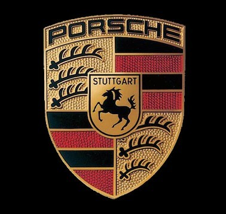

Porsche
Porsche History
The People’s Car
Ferdinand Porsche started his company as a consulting firm in 1931 but was assigned by the German government to design a car for the people. The company was to be called ‘Volkswagen’ or ‘The People’s Car’. Given strict parameters such as keeping the car air-cooled so it’s easier to maintain, Ferdinand Porsche designed and concocted the Volkswagen Type 1, or what we know as the original ‘Beetle’.
Making Things Work
World War II then started, turning the Volkswagen factory to build military-spec versions of the Type 1, the Type 82 Kübelwagen and the amphibious Type 166 Schwimmwagen.
When World War II ended, Ferdinand Porsche was removed from the Volkswagen company and was arrested for war crimes. He was not tried and was released after 20 months of imprisonment to produce his first car under his own brand, the Porsche 356.
Since Germany was still recovering from the war, their Porsche parts were shared with the Volkswagen Beetle such as the engine case, transmission, and suspension. However, Porsche started manufacturing their own parts for the 356 as time went on and creating their own flavor of sports car dynamics. Their design philosophy has always been: “Put an engine in the back and make it work.” Make it work, they did.
The Evolution of a Sports Car Icon
In 1964, the 356 was in need of a refresh, so what they did was launch the 911: same engine layout, rear-mounted and air-cooled, but now with a flat-six cylinder engine. The 911 then took over the racing scene and the sports car scene as the ‘it’ car. There was still a small market for four-cylinder engines so they developed the 912, but the 911 was still the ticket to their success.
The 911 was a handful on the corners due to all the weight in the back, and physics is saying that this layout shouldn’t work. As Jeremy Clarkson, a famous car presenter once said, “It’s like looking at a horse and carriage and saying, ‘I know! Let’s put the horse in the back!’” Weight distribution is now compromised, with the weight behind the rear axles, shifting the center of gravity to the back. If you’re a novice, you could experience snap oversteer but to compensate, the rear wheels will get better traction so it’s all about race management and how daring you feel.